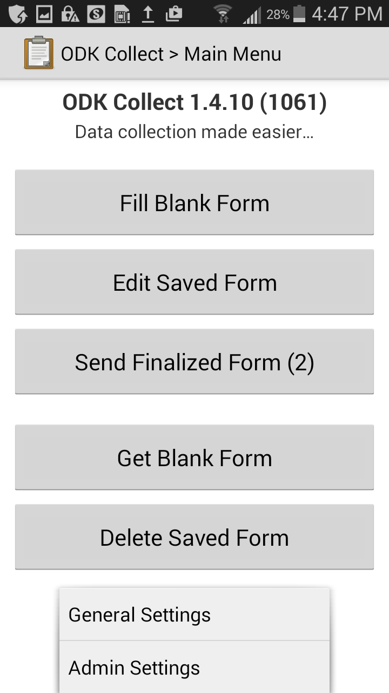
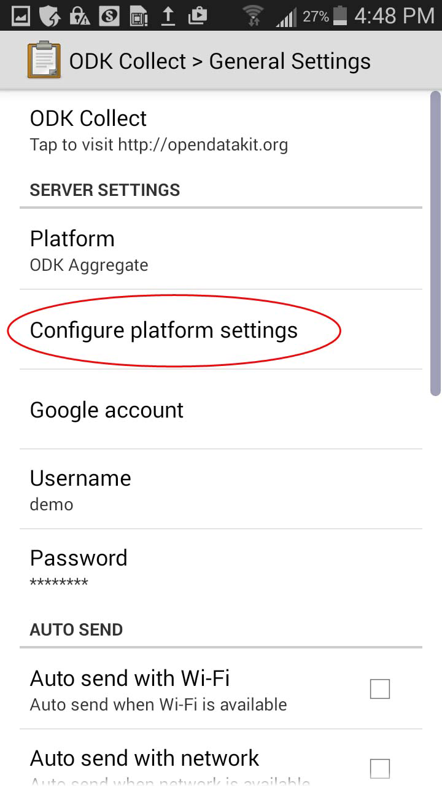
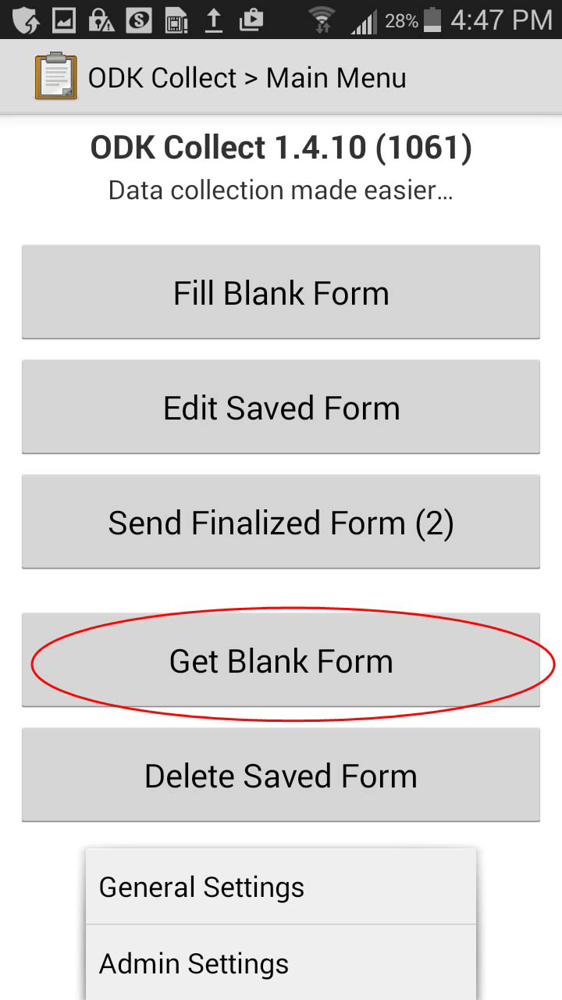
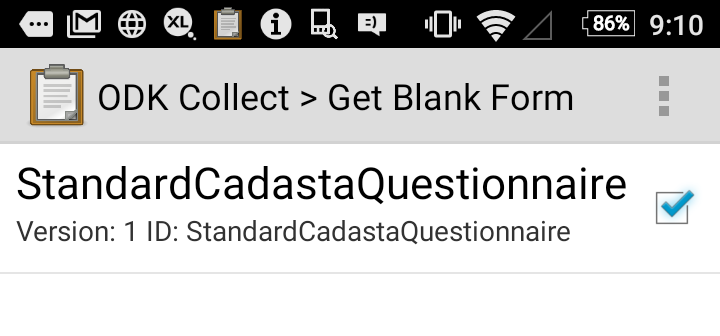
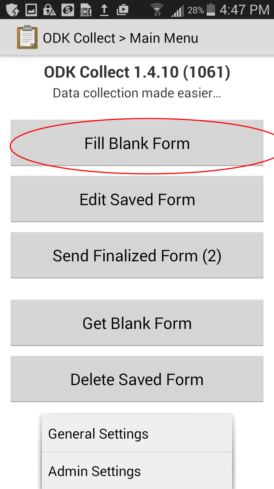
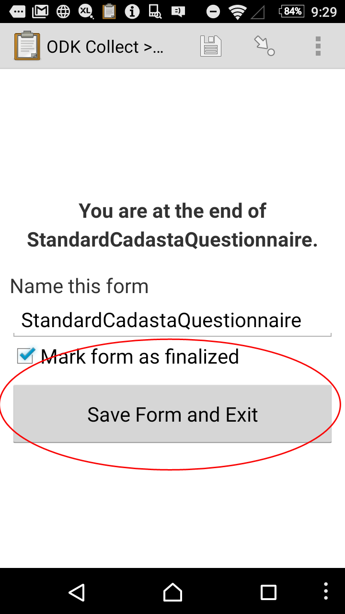
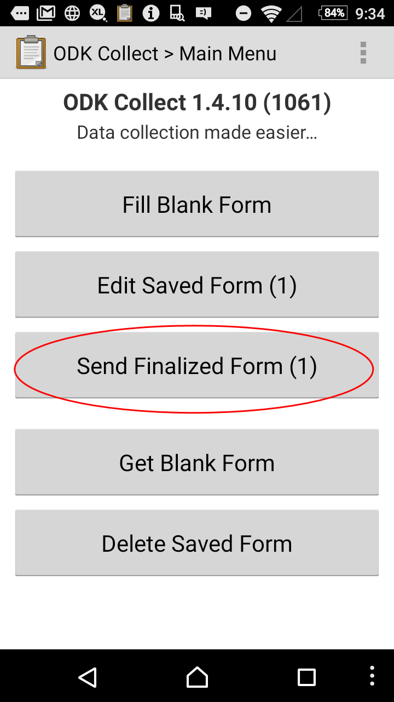

Open Data Kit (ODK) Collect User Guide
Field data collection is an important part of the land and resource rights documentation process. The Cadasta Platform is designed to easily accommodate a variety of tools for data collection, allowing for ingestion of data. This guide will show you how to use ODK for data collection and to streamline the process of getting accurate geospatially enabled data directly into the platform.
ODK is a free, open source mobile data collection application for Android devices (sorry Apple fans). To get started, please download ODK Collect from the Google Play Store, or wherever you acquire your applications.
Initial Setup
If this is the first time you have used ODK with the Cadasta Platform, you will need to configure ODK for direct syncing with the Platform. In order to do this, you will first need to setup your Cadasta account if you haven't already (see Getting Started).
- Once you have installed ODK, please open the application.
Select General Settings from the home page using the menu key.

Now click Configure Platform Settings.

On this screen you will need to enter the necessary URL:
- https://platform.cadasta.org/collect (if for production); or
- https://demo.cadasta.org/collect (if for testing)
Please also enter the Username and Password utilized with the Cadasta platform
Select the Back button two times to return to the ODK Main Menu.
Now ODK is configured for data collection that will feed directly to the Cadasta Platform.
Loading your Form
Now we need to load the forms posted to the Cadasta Platform to the device.
Select Get Blank Form from the home page.

Enter the Cadasta Platform Username and Password if prompted.
Place a checkmark next to the form you would like to download and select Get Selected.

Data Collection
Now it’s time to collect some data!
- From the ODK Main Menu select Fill Blank Form.

- Select the relevant form for data collection
- Swipe left twice to get started completing the form
- Continue answering all the survey questions until you reach the "End of survey" message
- Select Mark Form as Finalized checkbox
- Click Save Form and Exit

- When ready to submit data (via WiFi or over the mobile network), click Send Finalized Form.

- After data is confirmed as sent, and you have received a confirmation message, the used form can be deleted.